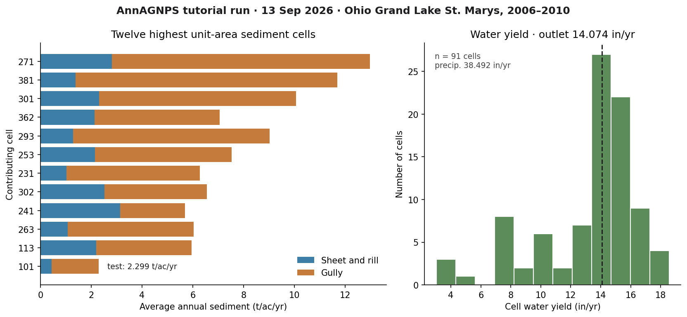
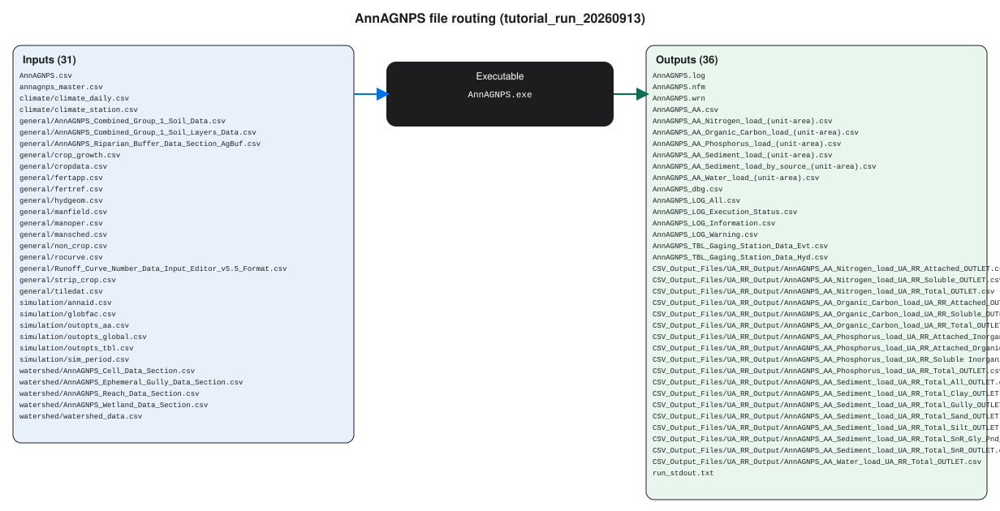

AnnAGNPS
A first successful run of the Annualized Agricultural Non-Point Source model on Windows. You download the USDA-ARS AGNPS package, stand in a CSV watershed folder, run AnnAGNPS.exe, and read the average-annual sediment and water files. GIS is not required for this path.
1. What this model does
AnnAGNPS is a continuous, daily, watershed-scale pollutant loading model. Landscape cells generate runoff, sediment, nitrogen, phosphorus, and organic carbon. Those loads move into reaches, and the reaches connect to an outlet. Sheet and rill erosion on a cell follow RUSLE relationships. Gully and channel processes are separate modules. The time step is daily; the files you will open first are average annual summaries.
The lab’s pinned engine is AnnAGNPS.exe version v6.00.a.024_2024.05.23 (64-bit), from the complete AGNPS 6.0 package.
2. Get the software
Download the complete self-extracting AGNPS package from the USDA-ARS National Sedimentation Laboratory. That archive is the one that includes the pollutant-loading engine, TopAGNPS, the Input Editor, STEAD, weather tools, and the manuals. The ARS software catalog entry is software id 524.
On this host the extracted tree is already at C:\Grok\Models\installs\AnnAGNPS. If you are repeating the lab path, you can skip the download and use that folder.
3. The lab install
The AGNPS tree has several programs. Only one of them is the model you run for this tutorial.
| Piece | Where | First-run role |
|---|---|---|
AnnAGNPS.exe |
AGNPS\PLModel\Execute\ |
The pollutant-loading engine. Copy it into the CSV folder and run it there. |
| CSV watershed inputs | AnnAGNPS.csv, annagnps_master.csv, plus climate\, watershed\, general\, simulation\ |
Required. The master file lists every CSV the engine will read. |
| Ohio example | test_run\AGNPS_Watershed_Studies\OH_AGNPS_Example_Watershed\ |
The standing lab example (Grand Lake St. Marys / Chicago training subset). Copy from here; do not treat it as a scratch folder. |
| TopAGNPS, Input Editor, STEAD, agGEM | AGNPS\DataPrep\ and AGNPS\OutputProcessor\ |
Useful later. Not needed to finish this tutorial. |
installs\AnnAGNPS\golden is a junction to test_run. The verification below used a new working copy, not that junction, so the golden tree stays untouched.
4. Novice path: run the Ohio example
The example is a five-year continuous run (2006–2010, two initialization years) for a small agricultural watershed near Celina, Ohio. Precipitation in the output header is 38.492 inches per year. You will copy the CSV inputs into a fresh folder, drop the executable beside them, and run from that folder.
$src = "C:\Grok\Models\installs\AnnAGNPS\test_run\AGNPS_Watershed_Studies\OH_AGNPS_Example_Watershed\4_Editor_DataSets\CSV_Input_Files"
$run = "C:\Grok\Models\installs\AnnAGNPS\tutorial_run_20260913"
New-Item -ItemType Directory -Force -Path $run | Out-Null
Copy-Item "$src\AnnAGNPS.csv","$src\annagnps_master.csv" $run
foreach ($d in "climate","general","simulation","watershed") {
Copy-Item "$src\$d" "$run\$d" -Recurse -Force
}
Copy-Item "C:\Grok\Models\installs\AnnAGNPS\AGNPS\PLModel\Execute\AnnAGNPS.exe" $run
Set-Location $run
.\AnnAGNPS.exe
On this host you can instead rerun the lab wrapper, which copies those inputs, executes the engine, asserts the numbers below, and rewrites the figure:
python C:\Grok\Models\tools\run_annagnps_tutorial_verify.py
Stand in the folder that contains AnnAGNPS.csv. The engine does not take a project path on the command line. If you run it from PLModel\Execute, it will not see the Ohio inputs.
5. Confirm the run
The console should end with Successful execution and normal termination of AnnAGNPS. Then open the average-annual files written beside the executable.
| Check | Where | This verification (13 Sep 2026) |
|---|---|---|
| Console | run_stdout.txt |
Successful execution |
| Cell 101 sediment subtotal | AnnAGNPS_AA_Sediment_load_(unit-area).csv |
2.2990 t/ac/yr |
| Outlet water load | AnnAGNPS_AA_Water_load_(unit-area).csv |
14.074 in/yr |
| Cell 101 nitrogen subtotal | AnnAGNPS_AA_Nitrogen_load_(unit-area).csv |
45.412 (unit-area file; not in the automated test) |
The automated test is test_tutorial_run inside tools\run_annagnps_tutorial_verify.py. It requires the console phrase, cell 101 sediment equal to 2.2990 t/ac/yr within 0.0005, and outlet water equal to 14.074 in/yr within 0.0005. That is the same numeric check as tools\test_all_models.ps1 for AnnAGNPS, pointed at a new working copy rather than the golden junction.
6. This verification’s figure
The 13 Sep 2026 run wrote 91 contributing cells. Gully load dominates several of the highest unit-area cells; sheet and rill are the rest of each bar. Cell 101, the test cell, is 2.299 t/ac/yr. Watershed precipitation is 38.492 in/yr; outlet water yield is 14.074 in/yr.

installs\AnnAGNPS\tutorial_run_20260913. Left: twelve highest unit-area sediment cells, sheet-and-rill versus gully. Right: water-yield histogram with the outlet value marked.If you rerun the wrapper, this PNG is rewritten in the run folder and in each tutorial images\ home.
Model Input and Output
Each bubble is one file type. Solid bubbles are required (at least one must be present). Dashed bubbles are optional. Same-type files that only change location or ID are shown once, with how few and how many a run can hold.

Executable
AnnAGNPS.exe
Required. How many: exactly 1. This run: 1. Example: AnnAGNPS.exe.
This is the pollutant-loading engine. Copy one copy into the watershed folder and start it there. It reads the control CSV, then every table the master file names.
Input files
AnnAGNPS.csv
Required. How many: exactly 1. This run: 1. Example: AnnAGNPS.csv.
This is the first file the engine looks for. It points at the master list, sets units and flags, and tells AnnAGNPS which tables to open before day one.
annagnps_master.csv
Required. How many: exactly 1. This run: 1. Example: annagnps_master.csv.
This is the table of contents. Each row is one data section and the path to its CSV. One master file names every input table for the run.
climate_daily.csv
Required. How many: exactly 1. This run: 1. Example: climate/climate_daily.csv.
This is the daily weather table for the watershed: rainfall and related climate values for each simulated day. AnnAGNPS uses one daily climate file per run.
climate_station.csv
Required. How many: exactly 1. This run: 1. Example: climate/climate_station.csv.
This names the climate station and its location. One station table belongs with the daily file so missing days and units are defined. Open the example file in the verification folder to see that layout on disk.
soil data CSV
Required. How many: exactly 1. This run: 1. Example: general/AnnAGNPS_Combined_Group_1_Soil_Data.csv.
This is the soil map. Each soil ID used on a cell is described here. Many soils are rows in this one file, not separate files.
soil layers CSV
Required. How many: exactly 1. This run: 1. Example: general/AnnAGNPS_Combined_Group_1_Soil_Layers_Data.csv.
This is the layer-by-layer soil profile for each soil ID. Thickness and texture by depth sit in rows, still in a single table. Open the example file in the verification folder to see that layout on disk.
riparian buffer CSV
Optional. How many: 0 to 1. This run: 1. Example: general/AnnAGNPS_Riparian_Buffer_Data_Section_AgBuf.csv.
This describes riparian buffers. If the watershed has none, the table can be empty, but the master file may still name one buffer table. Open the example file in the verification folder to see that layout on disk.
crop_growth.csv
Required. How many: exactly 1. This run: 1. Example: general/crop_growth.csv.
This is crop growth parameters: emergence, cover, and water use. One growth table serves every crop ID used in management. Open the example file in the verification folder to see that layout on disk.
cropdata.csv
Required. How many: exactly 1. This run: 1. Example: general/cropdata.csv.
This is the crop catalog. Each crop ID in the schedule looks up names and coefficients here. One catalog file per run. Open the example file in the verification folder to see that layout on disk.
fertapp.csv
Optional. How many: 0 to 1. This run: 1. Example: general/fertapp.csv.
This is fertilizer applications by field and date. One table can be nearly empty when no fertilizer is applied, but the master may still list it.
fertref.csv
Optional. How many: 0 to 1. This run: 1. Example: general/fertref.csv.
This is the fertilizer reference list: nutrient content of each product named in the application table. One reference file. Open the example file in the verification folder to see that layout on disk.
hydgeom.csv
Required. How many: exactly 1. This run: 1. Example: general/hydgeom.csv.
This is hydraulic geometry for channels. One table tells how wide and deep reaches are so water and sediment can move downstream. Open the example file in the verification folder to see that layout on disk.
manfield.csv
Required. How many: exactly 1. This run: 1. Example: general/manfield.csv.
This lists management fields, the land units that share a schedule. Cells point at these rows. One field table per run. Open the example file in the verification folder to see that layout on disk.
manoper.csv
Required. How many: exactly 1. This run: 1. Example: general/manoper.csv.
This is the operation catalog: tillage, planting, harvest. The schedule calls these operations by name from one catalog file. Open the example file in the verification folder to see that layout on disk.
mansched.csv
Required. How many: exactly 1. This run: 1. Example: general/mansched.csv.
This is the calendar of operations on each field. Dates and operation IDs live as rows in this one schedule file. Open the example file in the verification folder to see that layout on disk.
non_crop.csv
Optional. How many: 0 to 1. This run: 1. Example: general/non_crop.csv.
This describes non-crop cover such as grass or forest. Crop rows stay in cropdata. One non-crop table is enough. Open the example file in the verification folder to see that layout on disk.
rocurve.csv
Required. How many: exactly 1. This run: 1. Example: general/rocurve.csv.
This is runoff curve numbers by cover and hydrologic condition. One curve-number table turns rainfall into runoff on every cell. Open the example file in the verification folder to see that layout on disk.
curve number (editor format)
Optional. How many: 0 to 1. This run: 1. Example: general/Runoff_Curve_Number_Data_Input_Editor_v5.5_Format.csv.
This is the same curve-number data in Input Editor v5.5 layout. The master may name it so the editor and the engine stay in sync.
strip_crop.csv
Optional. How many: 0 to 1. This run: 1. Example: general/strip_crop.csv.
This describes strip cropping. If the watershed has none, the file can be header-only. At most one strip-crop table is named. Open the example file in the verification folder to see that layout on disk.
tiledat.csv
Optional. How many: 0 to 1. This run: 1. Example: general/tiledat.csv.
This describes tile drains. A tiny file means little or no tile drainage. One tile table is the usual maximum. Open the example file in the verification folder to see that layout on disk.
annaid.csv
Required. How many: exactly 1. This run: 1. Example: simulation/annaid.csv.
This holds identification records the other tables refer to. One ID file belongs in the simulation folder. Open the example file in the verification folder to see that layout on disk.
globfac.csv
Required. How many: exactly 1. This run: 1. Example: simulation/globfac.csv.
This is global flags and factors for the whole run: units, process switches, and multipliers. One global-factor file. Open the example file in the verification folder to see that layout on disk.
outopts_aa.csv
Required. How many: exactly 1. This run: 1. Example: simulation/outopts_aa.csv.
This turns average-annual output tables on or off. One options file decides which AA load CSVs are written. Open the example file in the verification folder to see that layout on disk.
outopts_global.csv
Required. How many: exactly 1. This run: 1. Example: simulation/outopts_global.csv.
This is global output options for logs and summaries that are not tied to a single cell. One file. Open the example file in the verification folder to see that layout on disk.
outopts_tbl.csv
Optional. How many: 0 to 1. This run: 1. Example: simulation/outopts_tbl.csv.
This controls table-style outputs such as gaging-station files. One options table is enough. Open the example file in the verification folder to see that layout on disk.
sim_period.csv
Required. How many: exactly 1. This run: 1. Example: simulation/sim_period.csv.
This is the start date, end date, and length of the simulation. One period file. Wrong dates here make a first run look empty. Open the example file in the verification folder to see that layout on disk.
cell data CSV
Required. How many: exactly 1. This run: 1. Example: watershed/AnnAGNPS_Cell_Data_Section.csv.
This is the cell map: each landscape unit, area, soil, field, and the reach it drains to. Many cells are rows, not extra files. Open the example file in the verification folder to see that layout on disk.
reach data CSV
Required. How many: exactly 1. This run: 1. Example: watershed/AnnAGNPS_Reach_Data_Section.csv.
This is the channel network: each reach and how it connects to the outlet. Many reaches are rows in this one table. Open the example file in the verification folder to see that layout on disk.
ephemeral gully CSV
Optional. How many: 0 to 1. This run: 1. Example: watershed/AnnAGNPS_Ephemeral_Gully_Data_Section.csv.
This describes ephemeral gullies. Gully locations are rows. One gully table, which may be unused. Open the example file in the verification folder to see that layout on disk.
wetland CSV
Optional. How many: 0 to 1. This run: 1. Example: watershed/AnnAGNPS_Wetland_Data_Section.csv.
This describes wetlands in the network. One wetland table can be short or empty when none are simulated. Open the example file in the verification folder to see that layout on disk.
watershed_data.csv
Required. How many: exactly 1. This run: 1. Example: watershed/watershed_data.csv.
This is watershed-level identification and area. One short header table is read with the cell and reach files. Open the example file in the verification folder to see that layout on disk.
Output files
AnnAGNPS_AA.csv
Optional. How many: 0 to 1. This run: 1. Example: AnnAGNPS_AA.csv.
This is the combined average-annual summary of water, sediment, and nutrients. One file after a successful run if that output is on. Open the example file in the verification folder to see that layout on disk.
AA sediment load CSV
Optional. How many: 0 to 1. This run: 1. Example: AnnAGNPS_AA_Sediment_load_(unit-area).csv.
This is the main sediment table. Each row is a cell or reach. One unit-area sediment file; the Subtotal line is what we check. Open the example file in the verification folder to see that layout on disk.
AA sediment by source CSV
Optional. How many: 0 to 1. This run: 1. Example: AnnAGNPS_AA_Sediment_load_by_source_(unit-area).csv.
This splits sediment by source, such as sheet and rill versus gully. One by-source table when that output option is on. Open the example file in the verification folder to see that layout on disk.
AA water load CSV
Optional. How many: 0 to 1. This run: 1. Example: AnnAGNPS_AA_Water_load_(unit-area).csv.
This is average-annual water yield by cell or reach. One water-load file. The outlet row is the watershed water yield. Open the example file in the verification folder to see that layout on disk.
AA nitrogen load CSV
Optional. How many: 0 to 1. This run: 1. Example: AnnAGNPS_AA_Nitrogen_load_(unit-area).csv.
This is average-annual nitrogen leaving each cell or reach, per unit area. One nitrogen table when nutrient output is on. Open the example file in the verification folder to see that layout on disk.
AA phosphorus load CSV
Optional. How many: 0 to 1. This run: 1. Example: AnnAGNPS_AA_Phosphorus_load_(unit-area).csv.
This is average-annual phosphorus leaving each cell or reach, per unit area. One phosphorus table when that option is on. Open the example file in the verification folder to see that layout on disk.
AA organic carbon CSV
Optional. How many: 0 to 1. This run: 1. Example: AnnAGNPS_AA_Organic_Carbon_load_(unit-area).csv.
This is average-annual organic carbon leaving each cell or reach. One carbon table, a companion to nitrogen and phosphorus. Open the example file in the verification folder to see that layout on disk.
UA_RR outlet CSVs
Optional. How many: 0 to infinite. This run: 18. Example: CSV_Output_Files/UA_RR_Output/AnnAGNPS_AA_Sediment_load_UA_RR_Total_All_OUTLET.csv.
These are outlet-focused unit-area tables, one file per constituent and fraction the output options request. The set can grow with more species or outlets. Open the example file in the verification folder to see that layout on disk.
AnnAGNPS.log
Optional. How many: 0 to 1. This run: 1. Example: AnnAGNPS.log.
This is the plain-language run log: start time, files opened, and whether the engine finished. One log file per run. Open the example file in the verification folder to see that layout on disk.
AnnAGNPS.wrn
Optional. How many: 0 to 1. This run: 1. Example: AnnAGNPS.wrn.
This is the warning file. Values the engine accepted but flagged appear here. One warning file; a warning is not a failed run. Open the example file in the verification folder to see that layout on disk.
AnnAGNPS.nfm
Optional. How many: 0 to 1. This run: 1. Example: AnnAGNPS.nfm.
This is a formatted notes file written while inputs are read. One notes file. It is not a load table. Open the example file in the verification folder to see that layout on disk.
AnnAGNPS_dbg.csv
Optional. How many: 0 to 1. This run: 1. Example: AnnAGNPS_dbg.csv.
This is a debug dump of internal values. One debug CSV. Skip it unless someone asked you to trace a cell. Open the example file in the verification folder to see that layout on disk.
AnnAGNPS_LOG_*.csv
Optional. How many: 0 to 4. This run: 4. Example: AnnAGNPS_LOG_All.csv.
These are machine-readable logs split by status, information, warning, and a combined file. At most this small set is written. Open the example file in the verification folder to see that layout on disk.
gaging-station TBL CSVs
Optional. How many: 0 to infinite. This run: 2. Example: AnnAGNPS_TBL_Gaging_Station_Data_Hyd.csv.
These are gaging-station tables when that output is on. One file per requested station product. Extra gauges add files of this same kind. Open the example file in the verification folder to see that layout on disk.
run_stdout.txt
Optional. How many: 0 to 1. This run: 1. Example: run_stdout.txt.
This is console text we captured from AnnAGNPS.exe. One capture file. It should contain a successful-execution line. Open the example file in the verification folder to see that layout on disk.
7. After the first success
Once the engine has written those CSVs, you can open phosphorus and organic-carbon files the same way, or bring the average-annual tables into STEAD. Building a new watershed from a DEM is TopAGNPS plus the Input Editor; that is a different lesson. This one stops at a verified CLI run of the pollutant-loading model.